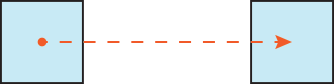

@keyframes
Правило @keyframes устанавливает ключевые кадры при анимации элемента. Ключевой кадр это свойства элемента (прозрачность, цвет, положение и др.), которые должны применяться к элементу в заданный момент времени. Таким образом, анимация представляет собой плавный переход стилевых свойств от одного ключевого кадра к другому. Вычисление промежуточных значений между такими кадрами берёт на себя браузер.
Самый простой вариант, когда у нас есть только два ключевых кадра — исходное и конечное состояние (рис. 1).

Рис. 1. Перемещение элемента
В таком случае @keyframes запишется в следующем виде:
@keyframes box {
from { left: 0; }
to { left: 300px; }
}В данном случае мы даём нашему набору имя box, оно затем будет задействовано в свойстве animation и определяем, что элемент будет изменять значение свойства left от 0 до 300 пикселей. Вместо ключевых слов from и to можно использовать, соответственно, 0% и 100%.
Ключевые кадры не обязательно должны начинаться с 0% и заканчиваться 100%. Анимация тогда будет происходить не сразу.
@keyframes box {
50% { left: 0; }
90% { left: 300px; }
}Синтаксис
@keyframes <переменная> { [ from | to | <проценты> ] [, from | to | <проценты> ]* }Значения
- <переменная>
- Уникальная переменная, которая связывает @keyframes с animation, через это свойство настраивается время анимации и другие её параметры.
- from
- Первый ключевой кадр, аналогичен 0%.
- to
- Последний ключевой кадр, аналогичен 100%.
- <проценты>
- Устанавливает ключевой кадр в процентах от времени всей анимации.
Пример
<!DOCTYPE html>
<html>
<head>
<meta charset="utf-8">
<title>@keyframes</title>
<style>
.creature {
width: 200px;
height: 200px;
border-radius: 50%;
background: #3ac;
position: relative;
}
.creature::before, .creature::after {
content: '';
position: absolute;
width: 30px;
height: 40px;
border-radius: 50%;
background: #000;
top: 40px;
animation: eye 3s ease-in-out infinite;
-webkit-animation: eye 3s ease-in-out infinite;
}
.creature::before { left: 55px; }
.creature::after { right: 55px; }
@keyframes eye {
90% { transform: none; }
95% { transform: scaleY(0.1); }
}
@-webkit-keyframes eye {
90% { transform: none; }
95% { transform: scaleY(0.1); }
}
</style>
</head>
<body>
<div class="creature"></div>
</body>
</html>Примечание
Chrome, Safari и Android поддерживают @-webkit-keyframes.
Opera до версии 12.10 поддерживает @-o-keyframes.
Firefox до версии 16 поддерживает @-moz-keyframes.
Спецификация
| Спецификация | Статус |
|---|---|
| CSS Animations | Рабочий проект |
Браузеры
| Internet Explorer | Chrome | Opera | Safari | Firefox | ||
| 10 | 3 | 12 | 12.10 | 4 | 5 | 16 |
| Android | Firefox Mobile | Opera Mobile | Safari Mobile | ||
| 2 | 5 | 16 | 12 | 12.10 | 4 |